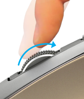
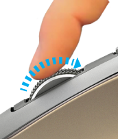
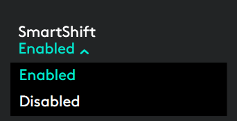
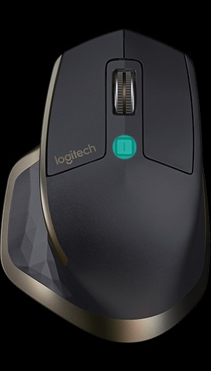

Roulette de défilement qui s'adapte à la vitesse
Si SmartShift™ est activé, la roulette de défilement qui s'adapte à la vitesse bascule automatiquement d'un mode à l'autre, selon la pression appliquée.
- Mode par paliers (cranté): idéal pour parcourir des éléments et des listes avec précision.
- Mode ultra-rapide (rotation libre): rotation avec friction minimale qui vous permet de parcourir de longs documents et des pages Web.
Faites tourner la roulette pour basculer en
 |
Freinez la roulette et faites-la tourner lentement
 |
Activer SmartShift
Sélectionnez Activé depuis le menu déroulant SmartShift situé dans l'onglet Pointer et faire défiler.

Désactivez SmartShift en sélectionnant Désactivé depuis le menu déroulant SmartShift.
Lorsque SmartShift est désactivé, la rotation ou le freinage de la roulette de défilement n'ont aucun effet sur le mode de défilement actuel.
Changement manuel de mode
Que SmartShift soit activé ou non, vous avez la possibilité de changer manuellement de mode en appuyant sur le bouton d'alternance.
Par défaut, le changement de mode est affecté au bouton situé au-dessus de la souris. (Vérifiez les affectations de bouton depuis l'onglet Souris.)

Définition d'un mode fixe de roulette de défilement
Si vous préférez n'utiliser qu'un seul mode, vous pouvez fixer la roulette de défilement sur le mode par paliers (cranté) ou ultra-rapide (rotation libre).
Dans l'onglet Pointer et faire défiler, sélectionnez Cranté ou Rotation libre depuis le menu déroulant Mode fixe de roulette de défilement.

IMPORTANT!
Le mode fixe que vous sélectionnez est disponible uniquement lorsque SmartShift est désactivé et lorsque l'alternance n'est affectée à aucun bouton MX Master.
Pour activer le mode fixe de roulette de défilement
- Sélectionnez Désactivé depuis le menu déroulant SmartShift.
- Dans l'onglet Souris, cliquez sur le bouton d'alternance mis en évidence et sélectionnez une autre action que l'alternance.
Pour plus d'informations, consultez le guide d'immersion MX Master.